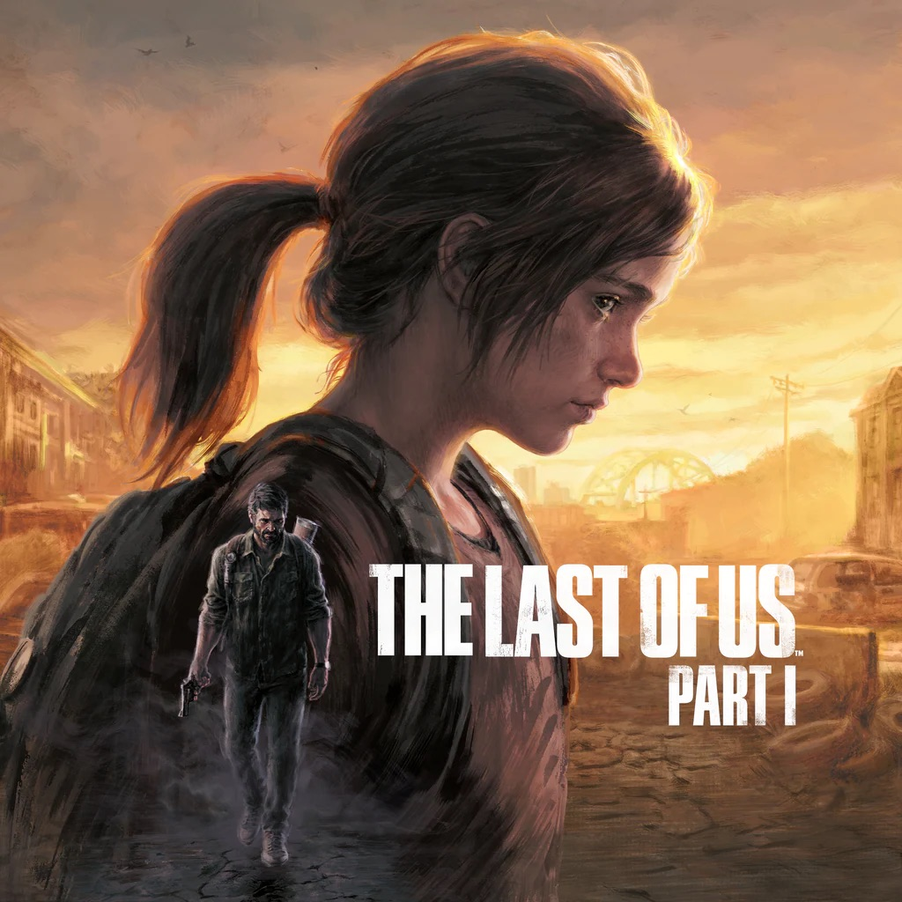
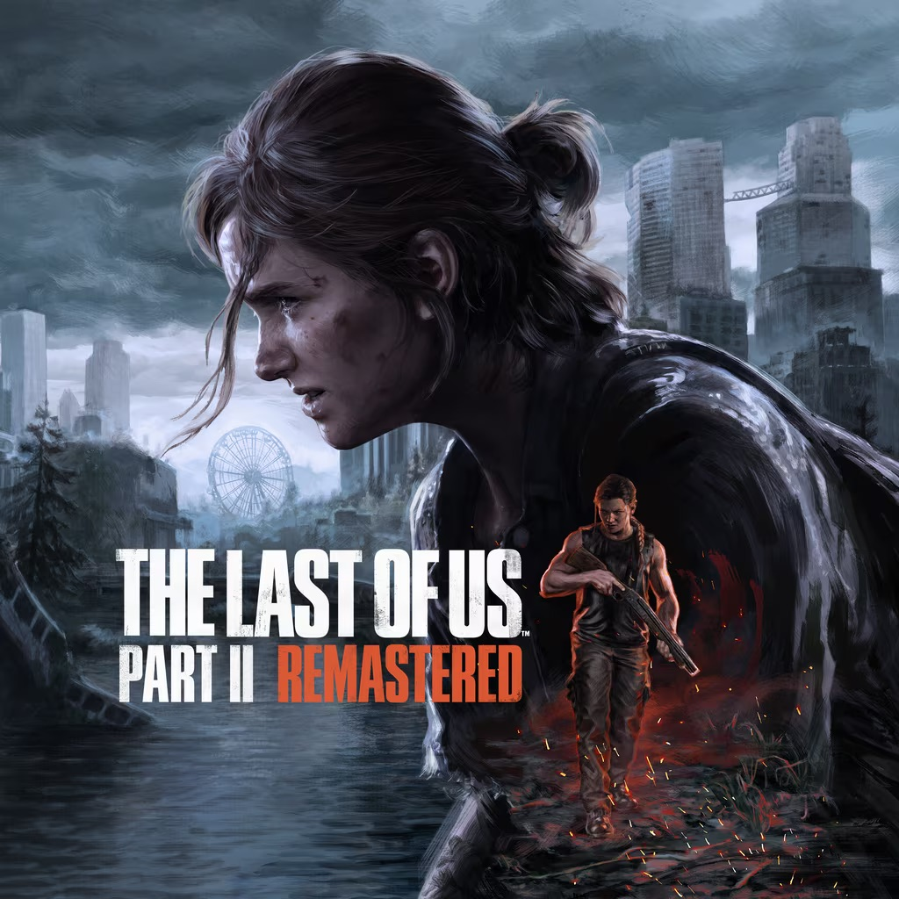
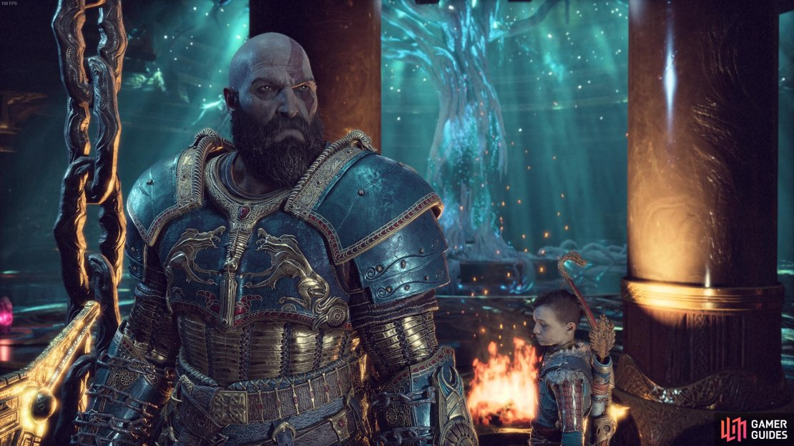
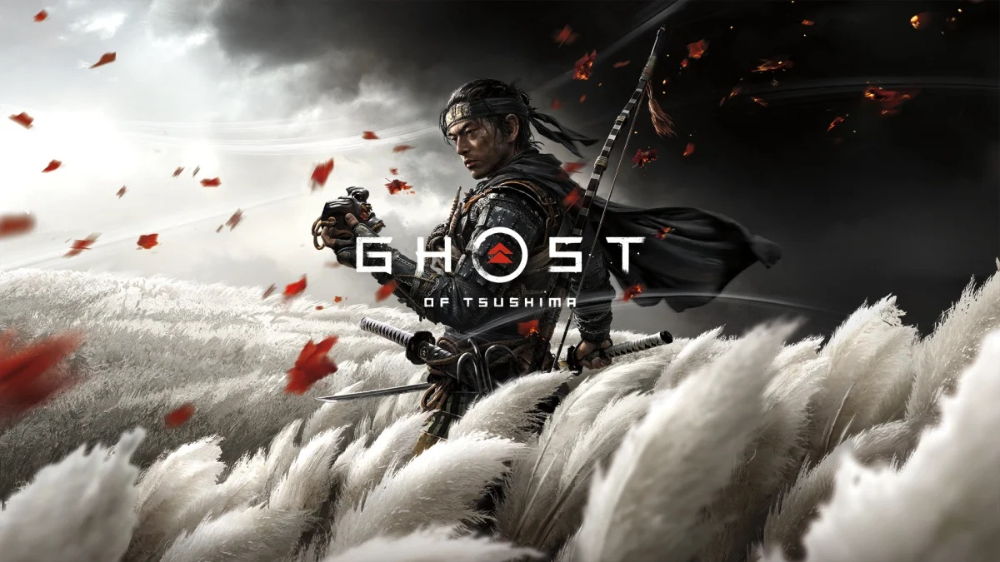
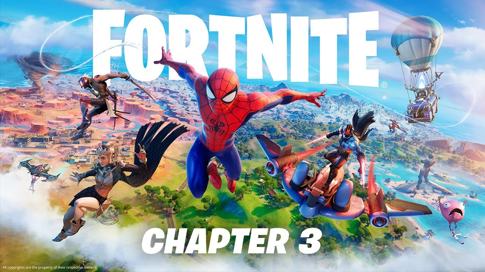
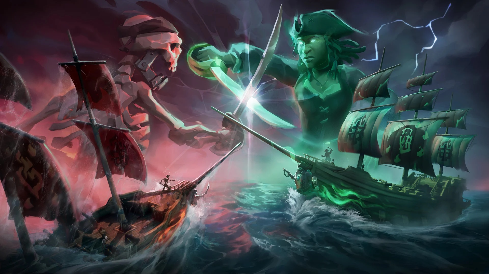

Sean Behan's Hobbies
What I Love Outside of Work
When I'm not coding or running, I'm almost always sinking into a great story. Whether that's a game with a script that refuses to leave my head, a film that earns every minute of its runtime, or a record that sets the mood for an entire week, these are the stories and sounds that have shaped how I think and feel. The games, movies, and music below aren't just pastimes — they're the soundtrack and scenery of the life I'm building outside the obvious things.
My Favorite Games
The Last of Us Part I
Endure and survive. Naughty Dog · 2013 / 2022.

Why I Love It
This game redefined what storytelling in the medium could look like. The relationship between Joel and Ellie unfolds with such quiet authenticity — it never tells you how to feel, it just puts you there. The tension between survival and humanity is woven into every mechanic, every scavenged bullet, every quiet moment. It set the foundation for everything that came after and proved that video games could tell stories worth taking seriously.
The Last of Us Part II
My all-time favorite. Naughty Dog · 2020.

Why I Love It
My favorite game ever made. Gustavo Santaolalla's score is stripped back — sometimes just a single guitar string plucked in a quiet room — yet it carries the full emotional weight of everything on screen. The story is genuinely brave. It forces you to walk miles in the shoes of someone you hate, and by the end you understand that revenge hollows out everyone it touches. It trusts the player to sit with discomfort and come out the other side changed.
God of War & Ragnarök
A god learning how to be a father. Santa Monica Studio · 2018 / 2022.

Why I Love It
Bear McCreary's score hits like a thunderclap and then pulls back into something gentle whenever it's just Kratos and Atreus alone in the wilderness. Here is a man defined by rage and violence with absolutely no idea how to just be a father. Watching him learn, stumble, and slowly open up across two massive games is one of the most genuinely moving character arcs I've ever experienced. Every swing of the Leviathan Axe feels satisfying in a way that's almost impossible to put into words.
Ghost of Tsushima
Playing inside a painting. Sucker Punch · 2020.

Why I Love It
No game I've played looks quite like this. The wind bending through tall grass, the way light cuts through bamboo, the ink-wash skies — it feels like playing inside a painting. The stance-switching combat system is where I keep coming back. Reading a group of enemies, identifying the mix of shields and spears and brutes, and switching stances on the fly makes every encounter feel like a puzzle with a deeply satisfying solution.
Fortnite
Twelve years old and still going. Epic Games.

Why I Love It
This one is personal in a way the others aren't. Since I was 12 years old, this game has been the place where my brothers and I come together regardless of where we are in the world. The reason it keeps working after all these years is because Epic has never let it go stale. The loot pool is always shifting, the collabs keep arriving, the map keeps evolving. It's not just a game — it's been a constant thread through my entire teenage and young adult life.
Sea of Thieves
Eight hours of treasure. One cannon on the horizon. Rare · 2018.

Why I Love It
What Sea of Thieves does that almost nothing else does is make you feel genuinely vulnerable. Spending eight hours hauling treasure across the open ocean and then hearing cannon fire on the horizon creates a real, physical tension that most games can only simulate. When ships clash — cannons blazing, planks splintering, crew scrambling below deck to bail water — it feels cinematic in the truest sense, like you fell into a pirate film.
My Favorite Movies
Why I Watch What I Watch
For me a great movie is one where the score and the image are inseparable — where the sound design pulls you into the world and refuses to let you leave until the credits roll. The four films below all do that in completely different ways, from historical epic to space opera to a Lego brick comedy. They span almost a decade and they sit together because each one reminded me why I watch movies in the first place.
2014 — The Lego Movie
Phil Lord & Christopher Miller. My guilty pleasure and I will never apologize for it. The humor never feels manufactured — it comes out of a world that is so thoroughly committed to being made of Lego that it never breaks the spell for a single frame. The water is Lego. The fire is Lego. The explosions are Lego. Underneath all the jokes is a story that is quietly symbolic and genuinely heartwarming, and the ending lands harder every time you see it.
2014 — Interstellar
Christopher Nolan with Hans Zimmer scoring. From the opening scenes Nolan makes you feel the weight of a dying world — the dust, the quiet resignation, the sense that humanity is running out of time. Zimmer's score is one of the greatest ever composed for film. The docking sequence after Dr. Mann blows up his ship — Cooper manually wrestling a spinning, damaged vessel back into alignment with that organ underneath it — is one of the most viscerally tense and exhilarating sequences I've ever watched.
2023 — Oppenheimer
Christopher Nolan with Ludwig Göransson scoring. Nolan has this extraordinary ability to take a single human being and make you feel the full historical weight of their existence — Oppenheimer is the peak of that. Every decision ripples outward into the world we live in today. Göransson's score is relentless and unsettling in exactly the right way, building tension that never fully releases even when the bomb goes off. I love history, and this movie was made for me.
Project Hail Mary
In the same vein as Interstellar but doing something different. It isn't about romantic love or saving the world in a grand heroic sense — it's about a friendship between two beings who have absolutely no reason to trust each other and every reason to be afraid of each other, and who choose connection anyway. The fishing scene is burned into my memory. The visuals, the action, the emotion all collide at once in a way that felt completely unlike anything I'd seen before.
The Soundtrack of My Life
The Weeknd
Save Your Tears · Popular
What I love about The Weeknd is the consistency. When I put on one of his songs I know exactly what I'm walking into — that smooth, slightly melancholic atmosphere, the tempo that gets your head moving without demanding your full attention. He's one of those artists where the whole discography feels like one coherent world he built and invites you into.
Bruno Mars
Risk It All · Locked Out of Heaven
One of the most reliable artists in music. Every song he puts out has that same infectious energy where the tempo grabs you before the lyrics even register. Risk It All has a warmth that feels timeless and Locked Out of Heaven is pure joy from start to finish. I always know what I'm getting with Bruno Mars and that's exactly why I keep coming back.
America
A Horse With No Name · Ventura Highway · Magic
Scratches a completely different itch. There's something about the simplicity of the guitar and the way the lyrics actually tell a story that feels rare now. A Horse With No Name has this open, drifting quality — you feel the desert and the silence just from the chord progression. These are songs that don't rush you. They just sit with you and let the story breathe.
Teddy Swims
The Door · Bad Dreams · Mr. Know It All · Need You More
Fits right into the same headspace as America for me. The Door and Bad Dreams lean hard into the guitar and the lyrics carry genuine weight — the kind of songwriting where you feel like he actually lived what he's singing about. A recent discovery I keep returning to. There's a rawness to his voice that makes everything feel more honest.
Coldplay
Viva la Vida · Adventure of a Lifetime · We Pray
One of those bands that has genuinely been part of my life since I was old enough to listen to music. Viva la Vida is my favorite — that orchestral build and the way the lyrics feel both grand and personal never gets old. They've managed to stay relevant across decades without losing whatever makes them distinctly Coldplay, and that's harder than it sounds.
Charlie Puth
LA Girls · Attention · How Long · December 25th
The outlier in my listening habits and I love him for it. Most of the artists I gravitate toward are consistent — you know the vibe before the song starts. Charlie Puth constantly surprises me. The Voicenotes album shifts styles across tracks in a way that should feel inconsistent but somehow works. And yes, I listen to December 25th outside the holiday season. I know. I'm not sorry.
Michael Jackson
Off the Wall · Chicago · Billie Jean
Recently came back to him and it's been a revelation all over again. Billie Jean is just untouchable — the bassline, the build, the vocal performance, everything about it is perfect. Off the Wall has an irresistible looseness, pure joy in musical form. What strikes me coming back is how timeless it all sounds. He was operating on a completely different level.
Scores
Last of Us II · God of War · Hail Mary · Interstellar
A huge part of how I listen to music that doesn't get talked about enough. Santaolalla's minimal guitar work carries so much weight without a single lyric. McCreary's God of War shifts between enormous orchestral moments and quiet, intimate themes. I'll put on the Interstellar organ sequences when I need to focus or think deeply about something. Instrumental scores tied to stories you love hit differently than any other kind of music.